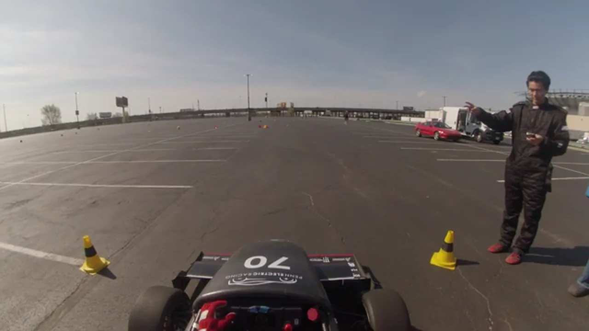

Camera perception and localization for Penn Electric Racing's driverless car
Chinmay Govind
Jeffrey Moon
This is REV 11, Penn Electric Racing's car. A driverless car on a cone course has to know where every cone is and where it is itself. We do both with one camera. In the next few minutes we will take one frame from this car and turn it into coordinates.
The track is only cones
Where is each one, in meters?
This is the GoPro on our car during its May 12 endurance run. The track is marked only by cones. Blue is on the left, yellow on the right, orange at the start. There are no lane lines and no map ahead of time. [click] That leaves one question. Where is each cone, in meters?
The pipeline
5.3 ms
per frame on a laptop GPU
Here is the whole pipeline. A frame goes in on the left, and a cone map and a corrected position come out on the right. [click] All eight stages together take 5.3 milliseconds a frame. Now we zoom into each one, starting with the frame.
One frame
CameraGoPro
MountRoll hoop
Image1280×720
Rate30 fps
Run5/12
Everything starts from one frame like this one, from the GoPro on the roll hoop. We get thirty of these every second, and our job is to turn each one into numbers.
Sync the clocks
Offset−95.0 s
Correlation0.995
The video came off YouTube, which strips the timestamps, so we do not know which moment of the car's log each frame belongs to. When the car turns, the far scenery slides sideways in the video. The IMU measures the same turn as a yaw rate. Here are both signals. [click] We slide the video along the log until they line up. The best match is a 95 second offset, with a correlation of 0.995.
Find the cones
Recall0.750.93
Color0.780.95
GMAC24.88.5
Time167 ms
The frame goes in at 640 by 352. [click] A ResNet-18 encoder shrinks it three times, to a quarter, an eighth and a sixteenth of the size. Each step sees a bigger area and knows more about what is in it. [click] A feature pyramid brings that knowledge back up to quarter resolution, so small far cones are not lost. [click] The heads paint a heat map for each color on a 160 by 88 grid, bright where a cone stands. [click] Each peak becomes a box with a color, and anything on our own car is thrown out. [click] Our first version found cone pixels and guessed colors and missed a quarter of the cones. This one gets recall from 0.75 to 0.93 and color from 0.78 to 0.95, at 7 milliseconds a frame.
One number per box
To place a cone we only need one point from its box. It is where the cone touches the ground, and the important number is its row, v. [click] Low in the frame means close. Up near the horizon means far. Chinmay will turn that into meters.
Calibrate the camera
Focal length563 px
Lens distortion k10.41
Height1.67 m
To measure anything we need the camera's focal length. We get it from turning. When the car yaws, far scenery shifts by focal length times the turn angle. So we plot pixel shift against the IMU's yaw rate, and the slope is the focal length, 563 pixels. [click] The GoPro has a wide lens that bends straight lines, so we undo that with a one-parameter radial model. [click] The camera height comes from requiring that the same cone, seen on different laps, lands in the same place.
Find the horizon

Cones6
Far away0 px
Horizon241 px
Image center360 px
Pitch12.5°
\( \varphi = \arctan \dfrac{360 - 241}{534} \)
To turn a pixel into meters we need to know where the horizon is in the image, and the camera is tilted down, so it is not the middle row. This frame from our April 9 run has six upright cones, two next to the car and four far away. [click] Slide every cone straight ahead, parallel to the car. Each one shrinks and climbs up the image, and all six lines meet at one point. A cone infinitely far away has zero height, and the row where that happens is the horizon. We never needed the camera's tilt for this. Every cone's height in pixels and the row of its base fall on one straight line, and the end of that line where the height is zero is the horizon. [click] Here that row is 241. The middle of the image is row 360, so the camera looks 119 pixels below the horizon. With a 534 pixel focal length, that is a 12.5 degree pitch.
Fit it from every cone
\( v = \color{#ff2d2d}{v_h} + \dfrac{h}{H_\mathrm{cone}}\, h_\mathrm{px} \)
Fit slope5.3
h / cone height5.1
Horizon209 px
Pitch15.0°
Range error6.510.52 m
The horizon moves every time the car brakes or hits a bump, so we cannot fix it ahead of time, and one cone is noisy. So we use every cone in the frame. Plot each cone's box height against the row of its foot. [click] Geometry says they fall on a line, and they do. The slope is 5.3, which matches camera height over cone height. Where the line reaches zero height is the horizon, and that gives the camera's pitch, 15 degrees. [click] Fitting it on every frame took our median range error on 95 real frames from 6.5 meters to half a meter.
\( d = \dfrac{1.67\ \mathrm{m}}{\tan 36.1^\circ} = 2.29\ \mathrm{m} \)
These are 3D cones, placed where our math says the real cones are, drawn from the GoPro's point of view. They land right on top of the real ones. [click] Now pull the camera out. This is our car, and every line is a ray from the GoPro down to a cone's foot. [click] Take the yellow cone. The ray leaves the camera at an angle alpha below the horizon: the camera's pitch plus the angle of that pixel. The camera is 1.67 meters up, so the distance is the height over tan alpha. That is 2.29 meters. [click] The catch is that the error grows with distance squared. At 6 meters one pixel costs 4 centimeters. At 26 meters it costs 70.
Onto the ground
From straight above, the frame becomes a map around the car. Each cone has a distance ahead and a side offset, in meters. [click] Close cones are accurate and far ones are not, so we only keep sightings within 6 meters.
Track one cone
Sightings349
Passes38
Gate1.5 m
Weight1 / r²
Spread0.00 m
This is every time the car saw one blue cone during the run, placed with the GPS pose. Bigger dots were seen from closer, and they count more, because error grows with distance squared. [click] Within each pass, sightings closer than a meter and a half are the same cone, and we average them with that weighting. Each ring is one pass. [click] Then all the passes merge into one cone.
Build the map
Sightings21,669
Tracks2,462
Cones170
Duplicates1190
Color agree86%94%
Do that for the whole May 12 run. These are all twenty-one thousand sightings. [click] Each cone on each pass becomes one track, 2,462 of them. [click] Tracks within a meter merge, the color is voted, and a cone needs at least two passes to count. That leaves 170 cones and no duplicates.
GPS drifts, cones don't
Laps17
Median0.470.31 m
Worst lap0.760.37 m
GPS wanders by tens of centimeters, so each lap puts the same cone in a slightly different place. Each gray line here is one lap. [click] The cones do not move. Every frame, the nearby sightings vote for the GPS offset that puts them back on their cone, and we follow that offset. [click] Here is every timed lap of the May 12 run. With GPS alone, how far a pass lands from its cone jumps around from lap to lap, up to 76 centimeters. With the cone correction it stays near 30 centimeters on every lap.
All of it, live
Here is the clip from the start, with every stage running on it. Each box is the detector on that frame, each number is that cone's distance from the camera, and on the right is where each cone lands on the ground around the car. This is the same 5.3 milliseconds a frame we showed at the start.
Results
Here is where we ended up. The detector finds 93 percent of cones. Range error is half a meter, localization is 31 centimeters, and the whole pipeline takes 5.3 milliseconds a frame. Next it goes onto the car's Jetson.
This is the whole pipeline running on the May 12 run. The GoPro feed with live detections is in the corner, and the map builds itself as the car drives. Space plays and pauses, the number keys change the camera, and you can drag to look around. PageDown or Escape goes to questions.
Questions
Chinmay Govind / Jeffrey Moon / Penn Electric Racing